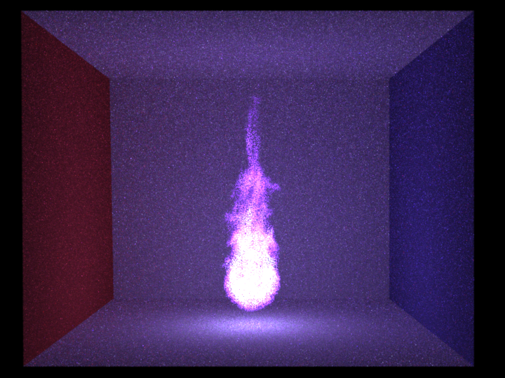
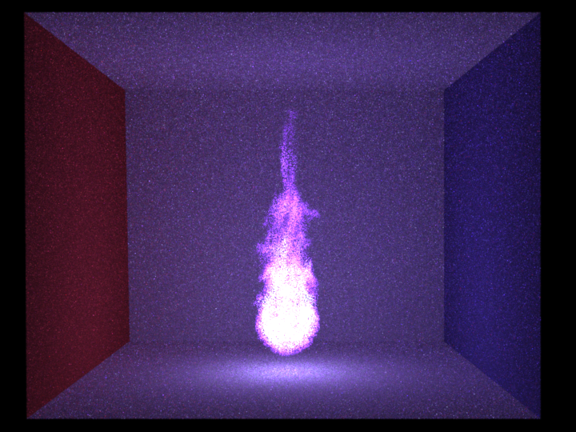

Motivation
{kind=link}
{kind=link}
For the project we wanted to render a scene which consists of a sword in the middle of the Sponza or a similar cathedral. The sword should be on fire or surrounded by fire. Fire will be the only source of light in the scene. This scene matches this years theme as fire is one of the elements. The challenge in this scene is definitly rendering the fire in a realistic way.
General
Participating and emissive media
Relevant files:
include/ourIncludes/medium.hinclude/ourIncludes/phaseFunction.h
include/ourIncludes/voxelGridTexture.h
src/ourClasses/emitters/volumeLight.cpp
src/ourClasses/media/medium.cpp
src/ourClasses/media/vacuumMedium.cpp
src/ourClasses/media/homogeneousMedium.cpp
src/ourClasses/media/heterogeneousMedium.cpp
src/ourClasses/phaseFunctions/isotropicPhaseFunction.cpp
src/ourClasses/textures/combinationTexture.cpp
src/ourClasses/textures/colormapTexture.cpp
src/ourClasses/textures/voxelGridTexture.cpp
src/ourClasses/textures/df3VoxelGrid.cpp
src/ourClasses/textures/mitsubaVoxelGrid.cpp
Each medium - fire, smoke or fog - has a bounding mesh. The path tracer can therefore query each mesh it hits for the inside medium and act according to it. The BSDF we use for those meshes is a dielectric one which has its interior IOR and its exterior IOR set to one so it does not have any effect on the ray passing through.
Sampling the free flight distance and calculating the transmittance for homogeneous media is done as described in the lecture slides. For heterogeneous media we use the delta tracking for sampling the free flight distance and the ratio tracking estimator to calculate the transmittance. Both algorithms are described in the paper Residual Ratio Tracking for Estimating Attenuation in Participating Media from Jan Novák et al[6].
If the medium is emissive the path tracer samples a distance according to the density of the medium (Infinity for a fire without smoke) and adds the radiance of the line segment it passes through. This radiance is estimated by taking one random point on the line segment and multiplying its radiance value by the length of the segment.
Heterogeneous media can get their sigmaS and sigmaA values from a 2D or 3D texture. A volume emitter can also have a 3D texture as a definition for the radiance. The most used texture in our case are voxel grid textures. We support both Mitsubas voxelgrid format [7] and Povrays DF3 [1] format, but use DF3 throughout this report. For estimating values within one voxel we use trilinear interpolation.
Since the voxel grids from Blender only store floats which convert to colors with equal r, g and b value we implemented a colormap texture which maps a constant color to any RGB value given a map from floats to Colors. With this we can achieve nice and realistic looking flames.
Isabelle Roesch
Simple features
Depth of field (5pt)
Relevant files:
src/perspective.cpp The depth of field is directly implemented in the perspective camera that was already provided. The default value for the camera is a lens with radius 0, so no depth of field. The focal distance and the lens radius can now be adjusted in the scene file. The implementation is taken from the PBRT book. [2]. To validate it, we show a comparison for two camera settings with Mitsuba.Depth of field with lens radius 0.2 and focal distance 5.5, rendered with path MIS with 200 spp.
Depth of field with lens radius 0.4 and focal distance 6.1, rendered with path MIS with 200 spp.
Perlin noise (5pt)
Relevant files:
src/ourClasses/perlinNoiseTexture.cpp For the perlin noise, several versions were implemented as a diffuse 3D texture. The parameters can be varied in the scene files. These parameters include colors, stretch factor, scale and type. The types are described here in detail.
Simple Perlin Noise
The standard perlin noise, following directly Ken Perlins implementation [4].

Marble V1
The marble texture is using five octaves of standard perlin noise, a scale and a cosinus function. Pseudocode:
persistence = 0.6
octaves = 5
frequency = 1
amplitude = 1
for i = 0..n-1
frequency = 2^i
amplitude = persistence^i
noiseValue += (noise(x, y, z) + 1) * amplitude * 0.5
end
noiseValue /= octaves
noiseValue = 1 - abs(cos(noiseValue * 10))
Marble V2
This version is using two overlaying perlin noise functions. Pseudocode:
persistence = 0.6
octaves = 6
noiseValue = fbm(x, y, z, persistence, octaves)
noiseValue /= octaves
noiseValue = 1 - abs(cos(noisevalue * 10))
if (noiseValue < 0.8) noiseValue /= 5
overlay = abs(turbulence(2x, 2y, 2z, persistence, octaves)) / (2*octaves)
noiseValue += overlay
noiseValue /= 1.5
Wood
To get a wood-like texture from perlin noise, one function was used to get the tree rings, another to get the fine grains. The two images shown in the report are rendered with different colors. Pseudocode:
persistence = 0.8
octaves = 2
noiseValue = sin(sqrt(x^2 + y^2) + fbm(x, y, z, persistence, octaves)
grains = noise(x, y, z * 7)
noiseValue += grains
noiseValue /= 3
noiseValue = abs(noiseValue)
Conductors (smooth and rough) (10pt)
Relevant files:
metalconstants.h src/conductor.cpp src/roughconductor.cpp src/warptest.cpp The implementation for smooth and rough conductors is taken from the PBRT book. [2]. The material properties for gold, copper and silver are taken from the PBRT website and mapped to the corresponding RGB values. To validate the conductors, a scene is rendered with Mitsuba. To additionally validate the rough conductor BRDF, it was taken into the warptest.Conductor cat, smooth gold and conductor spheres, rough silver, alpha from left to right: 0.05, 0.1, 0.2, rendered with path MIS with 500 spp.

Warptest for the sampling distribution of the rough conductor
Adaptive Sampling (10pt)
Relevant files:
src/render.cpp src/ourIncludes/adaptiveSampler.h src/ourClasses/adaptiveSampler.cpp The adaptive sampling was implemented following the instructions on the paper of Pajot et al.The feature can be turned on or off in the render.cpp file and it is split into two parts. One is the adaptive sampling based on the variance of a specific pixel, the second option is taking the neighbourhood of that pixel also into account, as described in the paper. The conclusion of implementing that feature is that using adaptive sampling is slower than not using it and there are scenes that really profit from the adaptive sampling and others that do not. A scene with a lot of pixels that always evaluate to the same or nearly the same color is converging a lot faster with adaptive sampling than without, but for all "normal" scenes that we tested, the adaptive sampling doesn't help much.
To illustrate the effect, we also output a .png file that shows where the adaptive sampler placed its samples. These pictures are shown in the report.
Rendering times:
- No AS: 2:20
- AS: 3:18
Rendering times:
- No AS: 0:06
- AS: 0:36
Advanced features
Path MATS for heterogeneous, emissive volumes (30pt)
Relevant files:
src/ourClasses/integrators/volume_mats.cpp To render fire and smoke, we first implemented a MATS integrator that handles heterogenous volumes with absorption, scattering and emission.The implementation is based on the pseudocode on the slides (Participating Media I, Slide 119). Interacting with a surface is handled using the code of the MATS path tracer from the exercises. When the path stops in a medium, a new direction is sampled and a color is calculated based on the sigmaS and sigmaT of the medium. When the medium emits light, its radiance is evaluated by taking the radiance of one point on the ray and multiplying it with the distance of the ray inside the medium.
Absorption and scattering could be validated using Mitsubas volpath integrator, as displayed in the images below. Emission was not validated because we tweak our heat voxel grids anyway using a scale factor and a colormap. Further pictures of the volumetric MATS path integrator in action can be seen in the EMS and MIS section.
Scattering
Samples per pixel: 1024
SigmaS: 1, 1, 1
SigmaA: 0, 0, 0
Absorption
Samples per pixel: 1024
SigmaS: 0, 0, 0
SigmaA: 1, 1, 1
Scattering and Absorption
Samples per pixel: 1024
SigmaS: 0.58, 0.05, 1
SigmaA: 0.42, 0.95, 0
Emission
Samples per pixel: 1024
Other features
- Colormap Texture: To render the fire in different colors, a colormap was implemented to map the heat/density values from the voxel grid to color values that are linearly interpolated. This texture can be used with a combination texture to feed the output of one texture into the input of another. It would also be possible to map perlin noise values to colors, for instance.
- Checkerboard 3D: The checkerboard texture was extended to a 3D version.
- Textured Microfacet: The microfacet texture is now able to take a texture as an argument. If it is set, the microfacet will evaluate its k_d from the texture and recalculate its k_s for each sample.
Milan Bombsch
Moderate features
Blender exporter (15pt)
Relevant files:
nori_export/README.md nori_export/__init__.py nori_export/df3.py
It is hard to get smoke and fire voxel grids from the internet which fit in our scene. Using blenders smoke and fire simulation we can tweak those in the way we like. The Blender exporter is based on the existing one from Adrien Gruson, but is now much more powerful. It can export the camera position, orientation and aspect ratio, the image resolution, all triangular and quad meshes, point lights, area lights, smoke density voxel grids and fire heat voxel grids. We can even export whole animations. For meshes we export the diffuse color and if it emits light, we add an area emitter with the intensity specified inside Blender. For smoke or fire domains we export the corresponding voxel data into df3 files [1]. We used this data format as there is already a python script which writes df3 files, given an array of floats, included into the Povray exporter for blender. nori_export/df3.py is copied from the Povray exporter. For fire we also export the colormap specified in Blender to get coloured fire.
We export smoke and fire voxel grids from: bpy.data.objects['Smoke Domain'].modifiers['Smoke'].domain_settings.density_grid / flame_grid
Pictures:


This animation was rendered with 120 frames. Each frame took 12 minutes to render with the volume_mis and about 100spp. The source of the voxel data is a fire simulation from blender. The fire does also contain some smoke.

The result of this export can be seen in the section about the volume_mis integrator.
Voxelgrids with Importance Sampling (15pt)
Relevant files:
src/emitters/volumeLight.cppImportance sampling the voxel grid which defines the emission of a fire can greatly improve the convergence rate for the volume_ems and the volume_mis integrators. Since we do not use the pure voxel grid data, but scale and manipulate its values to get a nice looking fire, we decided to do the importance sampling at the level of the volume emitter itself. The volume emitter creates 3 pdfs for X, Y given X and Z given X and Y, which depend on the luminance value of the radiance texture at grid points. This is done similar as in PBRT section 13.6.5[2]. As a default grid resolution we use 200 x 200 x 200, since we do not use voxel grids with a higher resolution than this.
Pictures:
 

Emission only
Samples per pixel: 10
Grid resolution for IS: 200 x 200 x 200
IS = Importance sampling the volume light source
Emission only
Samples per pixel: 1024
Grid resolution for IS: 200 x 200 x 200
IS = Importance sampling the volume light source
Advanced features
Path MIS for heterogenous, emissive volumes (30pt)
path_emsRelevant files:
src/integrators/path_ems.cppTo get a better understanding how the MIS works and how it combines an EMS and a MATS integrator, I programmed a path_ems and validated it with the existing scenes from Programming Assignment 4.
volume_emsRelevant files:
src/integrators/volume_ems.cppThe volume_ems integrator can handle participating media and emissive media. It is slower than the volume_mats (up to 5 times) since it does shadow connections through participating media and therefore needs to calculate transmittance even if the current shading point is inside vacuum. The volume_ems converges faster than the volume_mats for darker scenes. The volume_ems has one draw back: It has a really hard time to converge for scenes which either have a non-specular mesh inside a fire or smoke and fire combined in the same boundary box. In this case it can happen that the emitter sampling chooses a point really close to the shading point (mesh inside fire or on a smoke "particle"). This leads to a very small PDF (as the PDF is multiplied by the distance for a conversion from volume to solid angle sampling). In the integrator we then use radiance divided by PDF which leads to a really high radiance value. Getting rid of those spikes is nearly impossible (and with our constraint rendering time it was).
volume_misRelevant files:
src/integrators/volume_mis.cpp
The volume_mis does at every shading point no matter if we are on a surface or inside a volume an emitter sampling estimation of the radiance and a material based estimate and combines them. The combination of the two estimates involves the respective PDFs. It also makes this integrator much slower than the volume_mats (up to 7 times)
This is easy for the emitter sampling part as the pdf_emitter is then simply the PDF of choosing this point on or inside the emitter divided by the number of emitters in the scene and the pdf_material is either the PDF of the BSDF or the phase function.
For the material sampling part the pdf_material is also simply the PDF of the BSDF or the phase function, but the pdf_emitter is complicated in this case. Also the value of radiance_emitter in the material sampling part is not trivial. We calculate both in the following way: Choose a direction according to the BSDF. Walk along this direction till a solid surface is hit. Each time we hit a volume emitter we choose a random sample along the line segment inside the emitter and add its PDF to the pdf_emitter and its radiance * transmittance to the radiance_emitter. If we hit an area emitter we also add its pdf value to pdf_emitter and its radiance * transmittance to radiance_emitter.
This approach of calculating the pdf_emitter in the material sampling part is not well founded mathematically and is probably not correct. Nevertheless we achieve good results with this strategy as can be seen below.
As a guideline we used a Technical Memo from Pixar[5].
Pictures:
Samples per pixel: 1024 The path_mis is the one from Programming Assignment 4.
Scattering
Samples per pixel: 1024
SigmaS: 1, 1, 1
SigmaA: 0, 0, 0
Absorbtion
Samples per pixel: 1024
SigmaS: 0, 0, 0
SigmaA: 1, 1, 1
Scattering and Absorbtion
Samples per pixel: 1024
SigmaS: 0.58 0.05 1
SigmaA: 0.42 0.95 0
Scattering, Absorbtion and Emission
Samples per pixel: 1024
Scattering, Absorbtion and Emission
Running time for each integrator: 5 minutes
Samples per pixel (volume_mats): 354
Samples per pixel (volume_ems): 96
Samples per pixel (volume_mis): 61
Other features
- Infinity rendering: Render till the user stops the rendering process manually. This is enabled if the number of specified samples per pixel is 0.
- Time constraint rendering: Add a time limit in seconds to the XML file to ensure that the rendering will stop after this time limit has been reached
- Elapsed and remaining time display: In the command line the elapsed and an estimate of the remaining time is displayed.
- NoGUI: ./nori scene.xml --nogui starts the rendering process without the GUI. The process will stop when the rendering is done.
- Backups: Every 2 hours the state of the current rendering is saved to an EXR file. This saves work in case of a crash and visualizes the progress of overnight renderings.
Final Image - Sibenik Cathedral with a burning sword
We rendered our final scene with both volume_mats and volume_mis to see which results in a better image. The volume_mats produced a better result since it produced 6 times more samples per pixel than the volume_mis in the same time and since the scene has lots of specular materials the volume_mis could not compensate this. We didn't use our adaptive sampling method since it tends to focus more on bright than on darker pixels and has of course a computational overhead.

volume_mats
Without Adaptive Sampling
With importance sampling of the volume emitters
33'688 samples per pixel
48 hours of rendering on a single machine
No absorbing/scattering media, only emissive media
No other light sources than the fires
BSDFs: Diffuse, Microfacet, Conductor, Rough-Conductor, Mirror
Textures: Perlin noise (Wood, Marble), 3D Checkerboard
References
[1] Specification of the Povray DF3 density (volumetric) format [2] Physically Based Rendering, Second Edition by Matt Pharr and Greg Humphreys. [3] Robust Adaptive Sampling For Monte-Carlo-Based Rendering, Pajot et al. 2011 [4] Perlin Noise, Ken Perlin [5] Multiple Importance Sampling for Emissive Effects, Ryusuke Villemin and Christophe Hery, Pixar Technical Memo 13-02 [6] Jan Novák, Andrew Selle, Wojciech Jarosz. Residual Ratio Tracking for Estimating Attenuation in Participating Media. ACM Transactions on Graphics (Proceedings of SIGGRAPH Asia), 33(6), November 2014. [7] Mitsuba - A Physically Based Renderer by Wenzel JakobResources
Mitsuba: A free and open source renderer which we use to validate our implementations, by comparing the produced results of both renderers.Blender: A free and open source modeling, animation and rendering tool.
Sibenik Cathedral: A freely available obj mesh of the Sibenik Cathedral. The cathedral was refactored and tweaked to fit our needs.
Mirror: The mirror on the left in our final image.
The time values in the file names of the renderings include rendering multiple images at the same time and are therefore not representative for the performance of our renderer. An exception are the running times mentioned in this report.